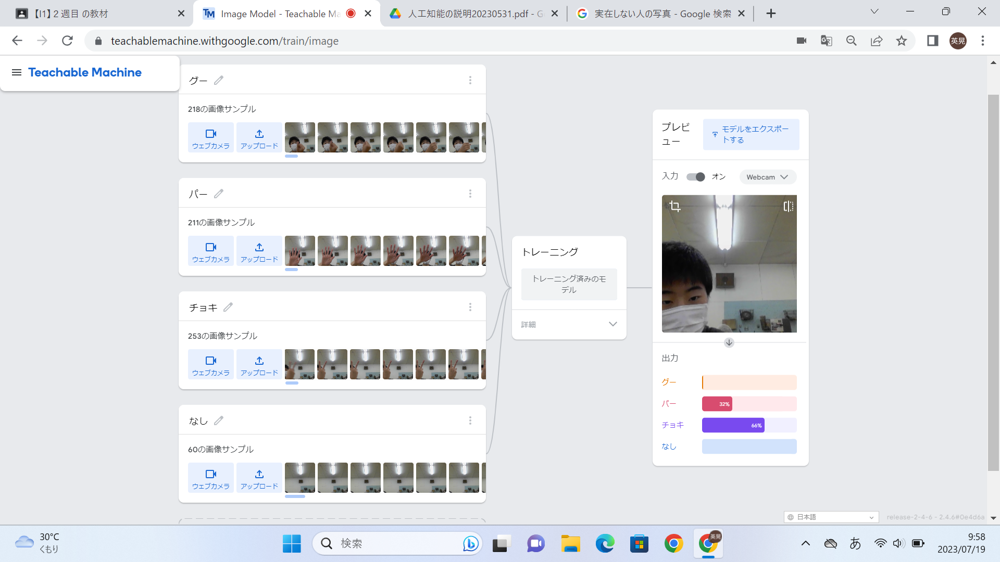
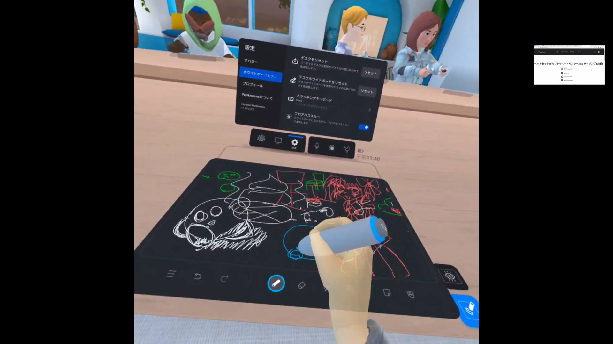

第2週目
2-1 １週目のレポートをHTMLで作る
１週目のレポート
1.内容
レポート作成を行うにあたって必要なことや注意事項の説明を聞いた。
2.感想
初めてホームページの裏側を見てみて「いろんな人に情報を伝えるためにこんなにたくさんのことをやってくれているんだな」と思いました。あらかじめ先生がプログラムしてくださっていたので、変えないといけないところしか変えなくてもレポートが簡単に作成できたけど、一人で一から作ると考えると難しいと感じました。でも、自分でホームページが作れたほうが今後役に立つと思うので、作れるようになりたいと考えました。
2-2 機械学習体験

1.内容
グーやパー、チョッキ、何もない手の形をいろんな角度から写真を約200枚ぐらいとり、カメラにその形の手が映ったら「〇〇」と判断してくれる体験をした。
2.感想
手だけの画像なら確実に反応してくれるが、今回は背景が映りこんでいたため、正確には判断できなかった。でも大まかには判断できていてすごいと思いました。
2-3 VR（バーチャルリアリティー：Virtual Reality）会議室の体験

1.内容
VRを起動した。そして、VRをつけていない人にもVR内が見えるようにみらーりんぐPCと接続した。会議室に入り、周りを見渡したり、歩いたり、絵を描いたり、会話したりした。
2.感想
初めてVRを使用して「こんな光景が見ることができるんだな」と感じました。でも、VRをつけたときに視点を合わせることが少し難しかったです。VR内で絵を描いたり、誰かと会話したり、歩いたりすることはとても楽しく、私も個人的にVRが欲しいと思いました。